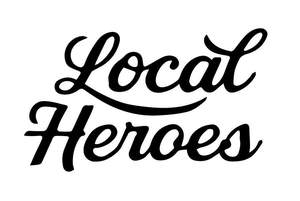

Trade Mark Journal No.2025/016 18 April 2025
UK00004181065 28 March 2025 (25,35,42)

- Class 25
- Clothing; Knitwear [clothing]; Jackets [clothing]; Ready-to-wear clothing; Woolen clothing; Furs [clothing]; Garments for protecting clothing; Layettes [clothing]; Clothing layettes; Linen clothing; Headbands [clothing]; Headbands for clothing; Gloves [clothing]; Gloves as clothing; Clothes; Aprons [clothing]; Kerchiefs [clothing]; Maternity clothing; Jerseys [clothing]; Denims [clothing]; Shorts [clothing]; Cashmere clothing; Capes (clothing); Oilskins [clothing]; Gabardines [clothing]; Silk clothing; Leather clothing; Clothing of leather; Leather (Clothing of -); Collars [clothing]; Parts of clothing, footwear and headgear; Knitted clothing; Veils [clothing]; Hoods [clothing]; Windproof clothing; Embroidered clothing; Corsets [clothing, foundation garments]; Wristbands [clothing]; Bandeaux [clothing]; Belts [clothing]; Belts for clothing; Rainproof clothing; Waterproof clothing; Casual clothing; Visors [clothing]; Jackets being sports clothing; Jackets (Stuff -) [clothing]; Stuff jackets [clothing]; Bottoms [clothing]; Playsuits [clothing]; Ready-made clothing; Clothing for leisure wear; Latex clothing; Trunks being clothing; Woven clothing; Infant clothing; Leisure clothing; Drawers [clothing]; Drawers as clothing; Ties [clothing]; Clothing for sports; Sports clothing; Athletic clothing; Clothing for children; Muffs [clothing]; Bodies [clothing]; Clothing for babies; Tops [clothing]; Clothing for infants; Clothing for cycling; Weatherproof clothing; Pockets for clothing; Fabric belts [clothing]; Water-resistant clothing; Triathlon clothing; Handwarmers [clothing]; Clothing for skiing; Beach clothing; Chaps (clothing); Thermal clothing; Cowls [clothing]; Men's clothing; Fishing clothing; Dance clothing; Mitts [clothing]; Braces for clothing.
- Class 35
- Marketing; Advertising and marketing; Advertising and marketing consultancy; Promotional marketing; Influencer marketing; Advertising and marketing services; Marketing consultancy; Product marketing; Affiliate marketing; Marketing consulting; Digital marketing; Advertising, marketing and promotion services; Marketing, advertising and promotion services; Advertising, marketing and promotional services; Advertising, promotional and marketing services; Marketing, advertising, and promotional services; Marketing research; Online marketing; Internet marketing; Marketing services; Business marketing consultancy; Marketing forecasting; Financial marketing; Referral marketing; Marketing analysis; On-line advertising and marketing services; Marketing studies; Targeted marketing; Business marketing services; Advertising copywriting; Distribution of advertising, marketing and promotional material; Investigations of marketing strategy; Marketing information; Direct marketing; Promotion, advertising and marketing of on-line websites; Planning of marketing strategies; Marketing advice; Direct marketing consulting; Consultancy services relating to advertising, publicity and marketing; Dissemination of advertising, marketing and publicity materials; Marketing research services; Research services relating to advertising and marketing; Marketing assistance; Event marketing; Design of marketing surveys; Marketing management advice; Database marketing; Marketing agency services; Promotion [advertising] of business; Business marketing consulting services; Development of marketing concepts; Marketing plan development ; Advertising, marketing and promotional consultancy, advisory and assistance services; Consultancy services in the field of affiliate marketing; Copywriting for advertising and promotional purposes; Direct marketing services; Marketing analysis services; Modeling for advertising or sales promotion; Advice in the field of business management and marketing; Trade marketing [other than selling]; Consultancy relating to marketing; Creative marketing plan development services; Promotional marketing services using audiovisual media; Modelling for advertising or sales promotion; Business marketing consultation services; Modeling services for advertising or sales promotion; Recruitment services for sales and marketing personnel; Marketing advisory services; Consultancy regarding advertising communications strategy; Development of marketing strategies and concepts; Advertising services for the promotion of e-commerce; Planning services for marketing studies; Consulting services in the field of Internet marketing; Business advice relating to strategic marketing; Marketing research and analysis; Marketing research or analysis; Marketing consultation services; Providing marketing consulting in the field of social media; Preparation of marketing surveys; Business advice relating to marketing; Marketing (Business advice relating to -); Advertising and marketing services provided by means of social media; Consumer profiling for commercial or marketing purposes; Professional consultancy relating to marketing; Advertising; Analysis of marketing trends; Advertising and marketing services provided via communications channels; Market research and marketing studies; Business consultancy services relating to the marketing of fund raising campaigns; Providing business marketing information; Advertising planning; Brand creation services (advertising and promotion); Publicity and sales promotion services; Developing promotional campaigns for business; Consulting services relating to marketing; Advertising and marketing services provided by means of blogging; Marketing in the framework of software publishing; Providing advice in the field of business management and marketing; Copywriting; Consultancy relating to demographics for marketing purposes; Advertising and promotion services; Information or enquiries on business and marketing; Advertising research; Marketing services in the field of travel; Advertising and publicity; Publicity and advertising; Publicity and sales promotion; Consultancy regarding advertising communication strategies; Advertising and promotional services; Promotional and advertising services; Promotional advertising services; Rental of all publicity and marketing presentation materials; Advertising and publicity services; Conducting of marketing studies; Conducting marketing studies; Advice relating to marketing management; Search engine marketing services; Administration relating to marketing; Sales promotion using audiovisual media; Telephone marketing services [not selling]; Consultancy relating to business advertising; Modelling and models for advertising or sales promotion; Estimations for marketing purposes; Analysis relating to marketing; Preparation of marketing plans; Consulting in sales techniques and sales programmes; Business advice relating to marketing management consultations; Recruitment advertising; Real estate marketing analysis; Marketing services in the field of web site traffic optimization; Marketing services in the field of dentistry; Market research for advertising; Marketing services in the field of restaurants; Promotion [advertising] of travel; Real estate marketing; Development of advertising concepts; Development of promotional campaigns; Planning services for advertising; Advertising research services; Preparation of reports for marketing; Advisory services relating to marketing; Design of advertising brochures; Digital advertising services; Preparation of advertising campaigns; Sales promotion; Organisation of customer loyalty programs for commercial, promotional or advertising purposes; Reproduction of drawings; Retail services connected with the sale of clothing and clothing accessories.
- Class 42
- Design of artwork; Graphic art design; Design services relating to artwork; Art work design; Design services for art-work; Graphic art services; Design of sculptures; Industrial and graphic art design; Commercial art design; Graphic illustration design; Graphic design of promotional materials; Graphic illustration design services; Industrial art design; Graphic arts design; Design (Graphic arts -); Design of logos for t-shirts; Design of audio-visual creative works; Graphic design; Design of post card cartoon characters; Design of printed material; Authenticating works of art; Works of art (Authenticating -); Packaging designs.
We Are Local Heroes Ltd